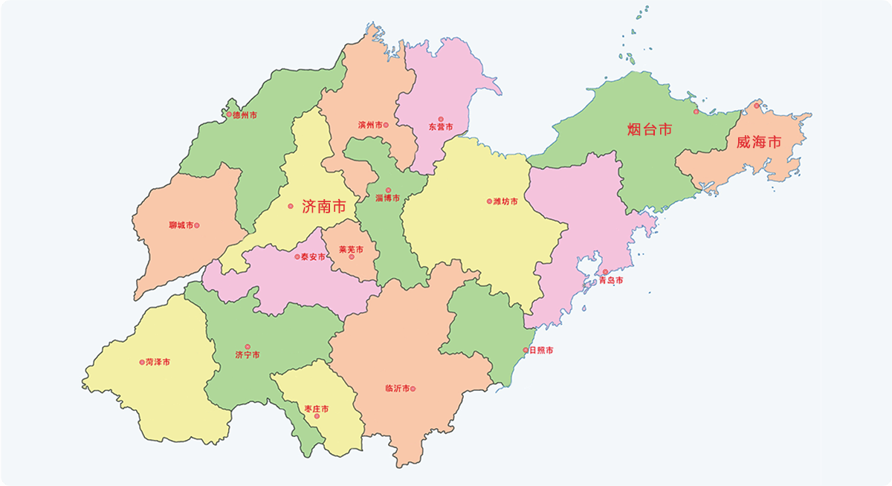

礼乐齐鲁
返回上一页
文物图谱
完整收录山东地区五类珍贵文物，涵盖画像石、乐器、乐舞俑、佛寺造像石刻、绘画器皿饰绘。

济南
青岛
淄博
济宁
临沂
枣庄
全部文物
画像石
乐器
乐舞俑
佛寺造像石刻
绘画器皿饰绘
文物类型
全部类型
画像石
乐器
乐舞俑
佛寺造像、石刻
绘画、器皿饰绘
按年代筛选
全部年代
新石器时代
商
周
春秋
战国
秦
西汉
东汉
三国
西晋
东晋
南北朝
北魏
北齐
隋
唐
五代
宋
元
明
清
当前显示：全部类型 - 全部年代 (共68件文物)
正在加载文物数据...
×
时间
馆藏单位/地区
文物描述